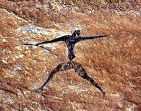

1000 DAYS OF THEORY
The Ultimate Cathedral
Mordechai Omer and Avi Rosen
Translated from Hebrew by Sonia Dantziger
The cyclic universe
From the beginning of existence on Earth, man has tried to create tools to extend the reach of his arm and his senses, and to link his
consciousness to the powers of the Universe active around him. In ancient cultures, relations to the universe were based on local religious and
cultural models of time and space that make up the concept of reality. For the Babylonians, Hindis, and Aborigines, there was no clear separation of
'subjective' inner reality, and 'objective' exterior space and time. Reality was a mixture of the products of the soul, dream, trance and myth,
together with the mundane, tangible world.[1] In pre-historic times, environmental structures were built,
such as Stonehenge in England, with huge stones standing about four meters, placed in a ring with a radius of about thirty-three meters.[2] Natural materials, such as rocks, shaped with simple tools requiring great physical effort, created an
astronomical instrument that focused the exalted mythic world onto the material reality in which the body of the observer existed. In pre-history cave
paintings, the schematic image of a man appears on stone (silicon), his arms and legs spread to accelerate his speed and maximize the range of his body.
The bow in his hands is a new technology enabling further extension of his reach.[3] The artist's intention
was to actively and magically influence reality and the animals he hunted.

Photograph of cave hunter with a bow. Sahara, Algeria. Circa 6000 BC.[4]
The mythology of ancient Egypt describes space before Genesis, occupied by one indivisible, unique power, embedded in the indefinable cosmic ocean
(Nun) outside the definitions of real space and time.[5] The cyclic nature of time after creation is
painted on the ceiling of the burial chamber of one of the Pharaohs, with Nut, the image symbolizing the arc-shaped sky, containing circles
symbolizing the sun in its course.

JNZ & DOLOOP (Jump on No Zero and Do Loop). Avi Rosen, 1983.[6]
The goddess, Nut, drawn in human form swallows the sun in the evening and gives birth to it at dawn. The day's cycle begins in her womb and ends in
her mouth. On the ground Geb, the Earth, bent in a spiral posture, suggests rotation around her axis. The reach of Geb's arm measures the circle that
her body will describe in rotating. Her hand nearly touches Nut's body and together they close the magic circle, uniting sky, earth and man, drawn in
the circles placed on the palms of Geb.[7] The god is portrayed in human form whose arm span and
consciousness touch the extreme edges of the universe. The Pyramids constitute the ultimate "transportation vehicle," withstanding the ravages of time,
and guarding the mummified body of the dead king on his journey from the material to the sublime unification with his father, the heavenly god. The
Pyramid with its contents is thus a capsule, carrying genetic, scientific, and artistic codes.
The Tables of the Decalogue that Moses brought down from his encounter with God, make up a code (written on silicon) of behavior and communication
between God and the Israelites. The tablets were put in a place of exalted "connection" with protective layers; a forecourt, a dwelling with an outer
room called "the Holy," then an inner room called "the Holy of Holies", encircled by a pavilion of cloth; in the inner room was a casket (the Ark) and
in that, the Tablets.[8] Severing the link between the Israelites and God is described by the expression,
"hiding his face" (hester panim): "And he said, I will hide my face from them, I will see what their end will be."[9] Beyond the direct meaning of hiding and severing, the words can be interpreted differently. If we can imagine space and time as
"torus", then turning the eyes to the opposite direction will eventually bring us to the place from which we departed. "The Holy of Holies" is a
"Virtual Reality apparatus" that exposes what is going on at the End of Time and Space, at the speed of light. One can assume that the "apparatus" is
no other than what caused Moses' face to radiate after his encounter with God.[10]
The compartmentalized universe
Christianity shook the concept of united linear space, and divided it into separate realms. Heaven is above Hell, and both are separated from Earthly
reality. For a religious person in that period, space was not continuous, but compartmentalized; even the sky was divided into seven distinct
Heavens.[11] Illustrations in a manuscript, made by a German nun named Hildegard of Bingen (1098-1179),
describes the central, albeit passive, involvement of man in the Cosmic structure. The Universe of the Middle Ages was portrayed with man at its
center, arms outstretched in the posture of the Crucifixion, enfolded in the Heavenly Embrace, and Hildegard of Bingen in the corner.[12]
Man shown crowned and enfolded in the Heavenly Embrace.[13]
The Gothic churches were a means of "channeling" between the believers and their God. The light penetrating through the translucent colored glass
windows was transformed from earthly to celestial light, permeating the heart of the believer.[14] Father
Suger wrote above the doors of his monastery at St. Dennis near Paris: "The windows will lead you to Jesus Christ."[15] On the soul reaching the sky there will be an ecstasy of divine light. As Hildegard of Bingen described it: "I saw a most
glorious light and in it a human form of sapphire hue... all inter-existent in one light, one virtue and power."[16] The structure of the cathedral is patterned on the Biblical description of the Temple, the building that replaced the
Tabernacle previously described. The ritual of Communion exemplified the new passion "to see and touch" myths (Walter Benjamin indicated the same
phenomena concerning the movies). This act unites the believer with godliness.
The Kabalistic doctrine, developed in the Middle Ages, describes a condition prior to the Creation, in which godliness is concentrated at a
singularity point whose origin was in infinity. In the Creation, the ray of light that penetrates the space within the infinite and fills it with the
emanations that include all the substances in the Universe, diffuses in all directions.[17] The central
purpose of the Kabala is to reunite the substance and carry out "repairs," (Tikun) or to make a new encounter of God and man.[18] Laying on phylacteries (tefillin) is the action of belief connecting man and the Lord's law. As is
written on the scroll in the tefillin: "And it shall be for a sign unto thee upon thy hand, and for a memorial between thine eyes that the Lord's law
may be in thy mouth: for with a strong hand the Lord hath brought thee out of Egypt."[19]
Laying tefillin on head and arm.[20]
The tefillin laid on head and arm become emissaries of the body and soul of the worshipper, and produce an extension of body and soul through written
code and belief, uniting them with the sublime.[21] A similar action occurs using the virtual reality
head-set device and the data glove, connecting the user in the real world to the virtual world, by means of the codes and protocols of internet
communication. The "memory" in the eyes of the user is therefore a "virtual" elevated world projected onto the display and into his consciousness,
through bending space and time into the singularity of his consciousness, through his arm wearing the data glove, which changes the information space
he is immersed in.[22]
Virtual reality navigation head and hand set.[23]
The perspective universe
Filippo Brunelleschi (1377-1446) created a realistic picture using the principle of the "vanishing point". The observer held a device in his hand with
a small hole, through which the painted image of the Baptistery in Florence was displayed before him. After removing the mirror in the device, the
real image of the Baptistery was revealed. The intention was that the observer would not distinguish the painting from the real thing. That simple
device may be defined as the prototype of the electronic virtual reality devices of our time.[24]
In addition to the vanishing point in the picture, one can imagine a second vanishing point outside the picture, in the inner part of the observer's
eye. All the objects on the plane of the picture gather at this infinitesimal point and from there are conveyed to the observer's consciousness. The
picture becomes an interface between two vanishing points, one in the landscape and the other in consciousness.
The Sistine Chapel in the Vatican, painted by Michelangelo in 1508-1512, is an assembly of "windows" containing various scenes. The man standing on
the floor of the Chapel transforms his body from its position in the secular physical world, through the portrayed prophets who earned heavenly revelation
at various levels, to the events at the center of the picture array. Here is a peak point in the Creation when God is nearest to man, almost touching
him. Whoever stands in the Sistine Chapel sees with his own eyes the image of God full-length in all His glory, and even his aging face. Furthermore,
he also sees Him behind as though hovering with him at the time of the Creation. In his work, Michelangelo corresponds to God, because he succeeds in
describing the human point of view like that of God, while he hovers at the side in the background, to witness the fateful events. The Chapel, like
ritual structures that preceded it, is an "instrument" helping believers to bring about a collapse of the Universe infinite wave function of the
Biblical stories, to a discrete state concealed in the consciousness singularity of the believer. In the Renaissance world, man's view was equal to
the Creator's, because both acted within the limits of reason. The extent of God's reach, simultaneously touching the sun, the moon, and everywhere,
is also the arm's reach of man. This ideal man who looks directly and fearlessly at the world like God, is depicted in the drawing of Leonardo da
Vinci.[25]
Vitruvian Man. Leonardo da Vinci.[26]
The singular universe
The Panopticon, meaning omni-seeing in Greek, is a model of an ideal all-purpose building. The installation was designed by the 18th century
philosopher and reformer, Jeremy Bentham, to enable inspection and control of the inmates of the installation without the inspector being seen, and
without the inmates having access to one another, and without them knowing they are being watched at any specific moment.[27]
According to Buddhist tradition, "the passage through the sun-door ensplendours all the powers of the self... the crown of the head flowers into a
tower of heads, an epiphany prepared for with praying hands and greeted with uplifted arms. At the same time the radiance of this moment is reflected
through the body a thousand-fold, with a myriad of eyes set in a myriad hands."[28] That is the moment
of exaltation in which the Universe gathers through the body of the singularity of subjects' consciousness. The growing body experienced the eternal
being through the eyes that see all, and the hands that feel everything, as in the Panopticon case. This happening is described in the sculpture image
of Buddha in Vietnam from the 15th century.

Sculpture of Buddha from the 15th century.[29]
The electronic cathedral
The sculptor Ezra Orion directed the performance "SUPER CATHEDRAL I" (April 27, 1992).[30] Laser beams
from a number of places in the world were beamed up to the sky, at the same time, creating a cathedral of monochrome light whose points of origin were
at 90 degrees to the Milky Way, and the infinity of the Universe. This action constitutes the final detachment of sculpture from the physicality that
had ruled it from pre-history. The laser beams that created the Orion's cathedral left the Solar System after five hours, and today it is 14 light
years from the Earth. The laser beams join the cathedral of radio and TV waves broadcast from Earth, their height being around 90 light years.
According to the laws of Reimann's non-Euclidian geometry, eventually the laser beam will execute a loop in space, and will return here. The
conversion of the cathedral's mass to information in the form of light energy is the highest stage in the development of the work of art. The
boundaries of Orion's cathedral and his arm span expand into the intergalactic space that becomes part of the observer.
Nam June Paik's "Mind and Body" piece from the 90s contains a cyborg image on a TV calibration pattern.[31] This image describes the present level in the understanding of a human subject relating to the Universe. The span of his arms
and consciousness are greatly expanded by means of electro-magnetic waves.
Pre-Bell-Man. Nam June Paik[32]
In Gordon Bell's "MyLifeBits" project, he has captured a lifetime's worth of articles, books, cards, CDs, letters, memos, papers, photos, pictures,
presentations, home movies, videotaped lectures, and voice recordings and stored them digitally. He is now paperless, and is beginning to capture
phone calls, IM transcripts, television, and radio.[33] MyLifeBits is a digital, real-time, unlimited
retrieval machine of memories, feelings, dreams and desires that are the summary of Gordon Bell's Life. This radical change in the concept of the
subject, and its surroundings reflects the new unlimited human arm span. In fact, this data can be retrieved by every internet user, and then it
becomes a shared life experience. The three-dimensional space is converted to electronic digital information, and is displayed before us in a real
time digital membrane Panopticon, on flat television and computer screens, in control rooms, and on huge electronic displays, in the style of Times
Square, New York, or Piccadilly Circus in London. It was Karl Guess who claimed at the beginning of the 19th century: "for as we can conceive beings
(like infinitely attenuated book-worms in an infinitely thin sheet of paper) which possess only the notion of space of two dimensions, so we may
imagine beings capable of realizing space of four or a greater number of dimensions."[34] "The idea of
extra dimensions in effect continues the Copernican tradition in understanding our place in the world: The earth is not the center of the solar
system; the sun is not the center of our galaxy; our galaxy is just one of billions in a universe that has no center; and now our entire
three-dimensional universe would be just a thin membrane in the full space of dimensions."[35]
Conclusion
In conclusion, throughout human history, man has tried to understand his relationship to the powers at work in the Universe, and to unite with them.
The structures in their respective generations, from pre-history to the Pyramids, the temples and the cathedrals, were instruments to unify man with
his God, according to man's technical ability. Man's hope was that unification would grant him eternal life. The digital media epoch turned cathedrals
from physical structures to structures of digital information, so man too was privileged to transform his physical body to higher dimensions. This
revolution led to a change in the way man is described graphically in the Universe.
Cyberspace has enlarged the range of human body and consciousness to the final boundaries of the speed of light, by means of electronic components
(silicon), which connect man to the Universe. One can see in this description an expression of quantum mechanics in which particles are in a state of
super-position, that is to say, at the same time in every location in space (net), until the act of differentiation is carried out, (action on net
data), leading to the collapse of the super-position wave function to a discrete state absorbed by the surfer's consciousness. The surfer too is in a
state of super-position and is part of the Universe wave function that comprises everything. Man's consciousness indeed influences the reality in his
vicinity via cyberspace. Reality has again become, as in the distant past, a mixture of the products of soul, dream, trance, and myth, together with
the material tangibility of daily existence. The cyclical concept of time and space, that dominated pre-historic culture, and was replaced by logical,
linear, western concepts, has returned to its starting point, by way of the cyberspace closed loop of time and space.
The Super-cathedral containing the self reflection in cyberspace. Avi Rosen, 2006. [36]
The Universe familiar to us becomes a link to every surfer who has already become a cathedral himself. Cyberspace electronically compresses the events
in the Universe into the singularity of the electronic cathedral. Man is situated in this singularity, while a finger of his hand extends to almost
touch the finger of God opposite him. He discovers that he is enclosed inside a spherical structure lined with membrane mirrors reflecting the images
of everything around him. It resembles a scene from the movie "Matrix 3", in which the hero "Neo" confronts the creator of the matrix (the image of an
aging man resembling God as pictured by Michelangelo) in a spherical cathedral covered with flat video screens displaying the image of Neo throughout
his entire life. For a minute, it seems to him that he has returned to Pythagoras' world, where man is the center of a flat-Universe, with planets and
spheres circling him, and the whole enveloped in God's embrace, as in the medieval illustration described previously. The surfer's finger is trying to
reach God's finger. To his amazement he discovers that the Heavenly embrace and the finger of God that he is trying to reach, and almost touches, is
not God's finger, but his own. Life is carried in an electronic Panopticon, in which the subject looking out from the center sees around him a flat
world circumscribed by his own body extensions. In cyber art the human image appears on silicon, implanted under the subjects' skin, which enables the
global membrane extension of his body and consciousness. Existence in this ultimate cathedral is the continuous artistic act of a self-reflective
hyper-subject.
Notes
---------------
[1] Leonard Shlain. Art & Physics: Parallel Visions in Space, Time & Light. New York: Morrow,
1991. pp. 28-30.
[2] Wikipedia (2006). http://en.wikipedia.org/wiki/Stonehenge
[3] Oxfam. "Cool Planet."
http://www.oxfam.org.uk/coolplanet/ontheline/explore/journey/algeria/history.htm
[4] Photograph of cave, hunter with a bow. Sahara, Algeria. Aprox. 6000 BC.
http://www.oxfam.org.uk/coolplanet/ontheline/explore/journey/algeria/history.htm
[5] Lucie Lamy. Egyptian mysteries. New light on ancient knowledge. London: Thames and Hudson,
1981. p. 42.
[6] JNZ & DOLOOP (Jump on No Zero and Do Loop), Lithography 100x70 cm. Avi Rosen, 1983. Based on the
sky and earth in their eternal cycles. In Lucie Lamy, p.21.
[7] Lucie Lamy, p.21.
[8] Richard Eliot Friedman. The Disappearance of God. Hebrew translation: Josef Emanuel. Or
Yehuda: Kinneret Zmora-Bitan, Dvir Publishing House, 2004. p.31.
[9] Deuteronomy, XXXII, 20.
[10] Exodus XXXIV, 29-35.
[11] Ian Tod and Michael Wheeler. UTOPIA. London: Orbis Publishing, 1978. pp.14-16.
[12] James Burke. The Day the Universe Changed. Little Brown & Co., 1988. p. 61. Hebrew
translation: Amos Carmel.
[13] Man shown crowned and enfolded in the Heavenly Embrace.
http://en.wikipedia.org/wiki/Image:Sthildegard-manuscript.jpg (A public domain image)
[14] E.H. Gombrich. The Story of Art. Hebrew translation: Arie Lerner and Hanoch Kalai. Tel
Aviv: Am Oved, 1956. p. 132.
[15] James Burke, p. 52.
[16] Anne Fremantle. Age of Faith. Nederland: Time-Life International, 1966. p. 68.
[17] Richard Eliot Friedman, p. 265.
[18] Richard Eliot Friedman, p. 306.
[19] Exodus XIII, 8-10.
[20] Laying tefillin on head and arm. http://he.wikipedia.org (A public domain image)
[21] B'nai Avraham www. http://bnaiavraham.net/photo_album/Misc_bac.htm
[22] Fifth Dimension Technologies http://www.5DT.com
[23] Virtual reality navigation head and hand set. Image courtesy of http://www.5DT.com
[24] Brunelleschi and the Origin of Linear Perspective. http://www.kap.pdx.edu/trow/winter01/perspective/
[25] Ian Tod and Michael Wheeler, pp. 38-39.
[26] Vitruvian Man. Leonardo da Vinci. http://en.wikipedia.org/ (A public domain image)
[27] Francis Huxley. The Eye the Seer and the Seen. London: Thames and Hudson, 1990. p. 93.
[28] Francis Huxley, p.14.
[29] Sculpture of Buddha from the 15th century. In Huxley, p.14. (A public domain image)
[30] Orion, Ezra. Intergalactic Sculpture, 1992 http://www.boker.org.il/info/negev/orion/galaxy/nasa.htm
[31] Nam June Paik. Mind and Body. http://www.panix.com/~fluxus/FluX/ESH_Jpgs/Mind_and_Body.JPG
[32] Nam June Paik. Pre-Bell-Man. Statue in front of the Museum für Kommunikation, Frankfurt am Main Germany. http://en.wikipedia.org/ (A public domain image)
[33] Gordon Bell. MyLifeBits. http://research.microsoft.com/barc/mediapresence/MyLifeBits.aspx
[34] Linda Dalrymple Henderson. The Fourth Dimension and Non-Euclidian Geometry in Modern Art.
N.J: Princeton Univ. Press, 1983. p. 19.
[35] Nima Arkani-Hamed, Savas Dimopoulos and Georgi Dvali. "The Universe's Unseen Dimensions."
Scientific American, August 2000. pp. 48-55.
[36] The Super-cathedral containing the self reflection in cyberspace. Avi Rosen, 2006.
Based on the sensory homunculus in: http://calder.med.miami.edu/pointis/tbiprov/NURSING/over3.html
--------------------
This article is available in its original Hebrew version at:
http://siglab.technion.ac.il/~avi/texts/ultimcathed.pdf
--------------------
Mordechai Omer is Professor of Modern Art at the Tel Aviv University, Head of Museum Studies and Curator at the Tel Aviv
University Gallery. In the last 10 years he has also been Director and Chief Curator of the Tel Aviv Museum of Art. Hi books have been published in
various countries, including Spain, the United States, Austria, France and Israel.
Avi Rosen is a New Media Artist and a Ph.D. candidate in Art History at Tel Aviv University. He is working at the Signal Processing Lab in the
Department. of Electrical Engineering, Technion I.I.T. He also teaches New Media Art in the Art Department at Haifa University and at the Art
Institute of Oranim at the the Kibutzim Seminary, Tivon.
Sonia Danziger works as a translator of texts from Hebrew to English. She has taught English for 27 years at various institutions
of higher learning, including the Technion.